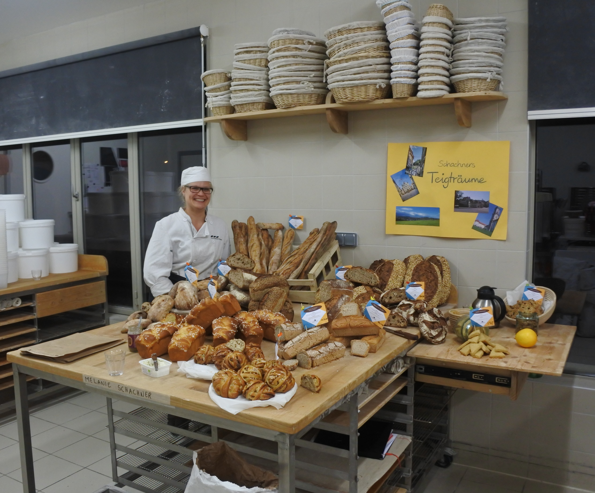

Willkommen!
Wer steckt hinter Teigträume Schachner?

Ich bin Melanie.
Betriebswirtin (FH) und Inhaberin eines französischen Bäckerdiploms ("CAP Artisan boulanger bio").
Besondere Konstellation wirst du dir denken...
Stimmt! üòä
Wie das kam?
Durch meine persönliche Freude an gutem Brot und ein besonderes Erlebnis:
Im Alter von 16 Jahren war ich im Rahmen eines Schüleraustauschs zum ersten Mal in Frankreich. Meine Gastfamilie hat keine Gelegenheit ausgelassen, mir die Besonderheiten der lokalen Küche vorzuführen.
Eine hat sich mir besonders eingeprägt - das Baguette.

Der Duft aus der Brottasche...
die knusprige Kruste...
und die weiche Krume bei der Verkostung...
... haben bis heute einen bleibenden Eindruck hinterlassen.
Seit diesem prägenden Erlebnis wusste ich, dass ich eines Tages selbst solche Brote zaubern (können) wollte. Diese Eigenschaften eines Brotes lassen mich übrigens auch heute noch auf Genuss-"Wolke 7" schweben. Und sie sind in meinen Augen Zeichen eines gelungenen Brotes.
Aber nun zurück zum eigentlichen Thema:
Wie ich zum Sauerteigbrot gekommen bin
In meinem 30. Lebensjahr wollte ich etwas ganz Besonderes unternehmen und da ist mir eine Aussage von mir selbst ein paar Jahre zuvor wieder eingefallen: "Ich will irgendwann einmal mein eigenes Baguette backen."
Wie ich das genau anstellen wollte, wusste ich zu dieser Zeit noch nicht. Also habe ich angefangen zu recherchieren. Und so bin ich auf der Website der
École Internationale de Boulangerie
gelandet.
Da ich bis dahin Frankreichs Süden noch nicht kannte, war die Entscheidung schnell getroffen. Blieb nur noch die Abklärung mit meinem damaligen Arbeitgeber. Nachdem ich von der Seite die Zustimmung hatte, ging es auch schon mit den Vorbereitungen los. Und im September 2017 auch schon auf die Reise ins Département "Alpes de Haute-Provence" - genauer gesagt nach St. Martin, Noyers-sur-Jabron.

Auszeit vom Büroalltag und stattdessen drei volle Monate Arbeit in der Backstube und im Klassenzimmer (ja, Theorie ist auch fürs Backhandwerk essenziell). Gekrönt wurde diese Ausbildung von einer Abschlussprüfung - praktisch wie theoretisch.


Zurück im Büroalltag
hat mich die Idee einer eigenen Kleinbäckerei nicht losgelassen
Vielmehr hat sie nach und nach Form angenommen, indem ich Freunde und Arbeitskollegen regelmässig mit Brot verköstigt habe.
Und so hat sich schliesslich auch die Back-WG mit "Daniela's Backstübli" ergeben, wo ich aktuell freitags tagsüber mit dem Sauerteig arbeite und am Ende des Tages fertige Brote zum Verkauf anbiete.